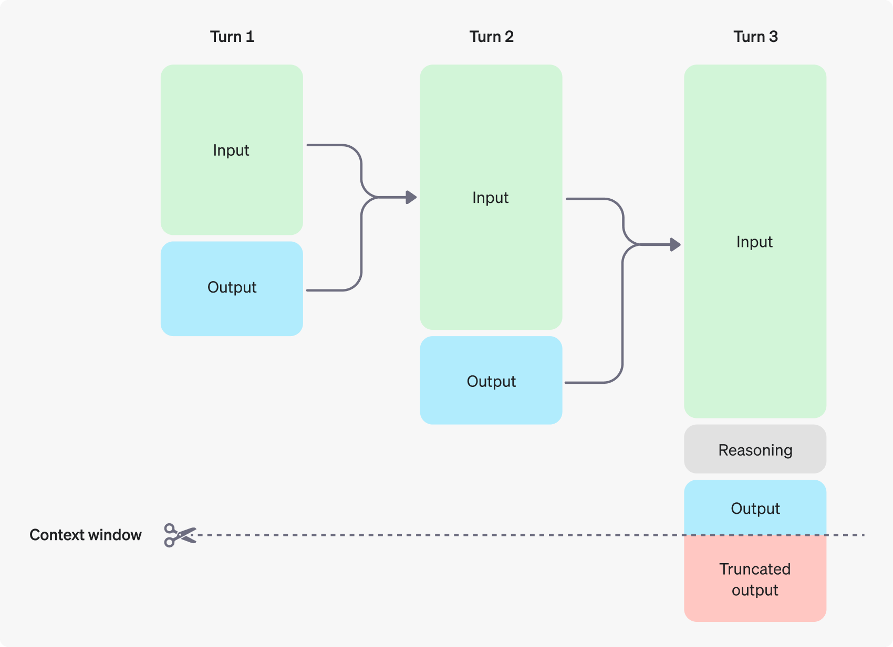

Conversation state#
Learn how to manage conversation state during a model interaction.
OpenAI provides a few ways to manage conversation state, which is important for preserving information across multiple messages or turns in a conversation.
Manually manage conversation state#
While each text generation request is independent and stateless (unless you’re using the Assistants API), you can still implement multi-turn conversations by providing additional messages as parameters to your text generation request. Consider a knock-knock joke:
Manually construct a past conversation
from openai import OpenAI
client = OpenAI()
response = client.responses.create(
model="gpt-4o-mini",
input=[
{"role": "user", "content": "knock knock."},
{"role": "assistant", "content": "Who's there?"},
{"role": "user", "content": "Orange."},
],
)
print(response.output_text)
By using alternating user and assistant messages, you capture the previous state of a conversation in one request to the model.
To manually share context across generated responses, include the model’s previous response output as input, and append that input to your next request.
In the following example, we ask the model to tell a joke, followed by a request for another joke. Appending previous responses to new requests in this way helps ensure conversations feel natural and retain the context of previous interactions.
Manually manage conversation state with the Responses API.
from openai import OpenAI
client = OpenAI()
history = [
{
"role": "user",
"content": "tell me a joke"
}
]
response = client.responses.create(
model="gpt-4o-mini",
input=history,
store=False
)
print(response.output_text)
# Add the response to the conversation
history += [{"role": el.role, "content": el.content} for el in response.output]
history.append({ "role": "user", "content": "tell me another" })
second_response = client.responses.create(
model="gpt-4o-mini",
input=history,
store=False
)
print(second_response.output_text)
OpenAI APIs for conversation state#
Our APIs make it easier to manage conversation state automatically, so you don’t have to do pass inputs manually with each turn of a conversation.
Share context across generated responses with the previous_response_id parameter. This parameter lets you chain responses and create a threaded conversation.
In the following example, we ask the model to tell a joke. Separately, we ask the model to explain why it’s funny, and the model has all necessary context to deliver a good response.
Manually manage conversation state with the Responses API.
from openai import OpenAI
client = OpenAI()
response = client.responses.create(
model="gpt-4o-mini",
input="tell me a joke",
)
print(response.output_text)
second_response = client.responses.create(
model="gpt-4o-mini",
previous_response_id=response.id,
input=[{"role": "user", "content": "explain why this is funny."}],
)
print(second_response.output_text)
Data retention for model responses#
Response objects are saved for 30 days by default. They can be viewed in the dashboard logs page or retrieved via the API. You can disable this behavior by setting store to false when creating a Response.
OpenAI does not use data sent via API to train our models without your explicit consent—learn more.
Even when using previous_response_id, all previous input tokens for responses in the chain are billed as input tokens in the API.
Managing the context window#
Understanding context windows will help you successfully create threaded conversations and manage state across model interactions.
The context window is the maximum number of tokens that can be used in a single request. This max tokens number includes input, output, and reasoning tokens. To learn your model’s context window, see model details.
Managing context for text generation#
As your inputs become more complex, or you include more turns in a conversation, you’ll need to consider both output token and context window limits. Model inputs and outputs are metered in tokens, which are parsed from inputs to analyze their content and intent and assembled to render logical outputs. Models have limits on token usage during the lifecycle of a text generation request.
Output tokens are the tokens generated by a model in response to a prompt. Each model has different limits for output tokens. For example,
gpt-4o-2024-08-06can generate a maximum of 16,384 output tokens.A context window describes the total tokens that can be used for both input and output tokens (and for some models, reasoning tokens). Compare the context window limits of our models. For example,
gpt-4o-2024-08-06has a total context window of 128k tokens.
If you create a very large prompt—often by including extra context, data, or examples for the model—you run the risk of exceeding the allocated context window for a model, which might result in truncated outputs.
Use the tokenizer tool), built with the tiktoken library, to see how many tokens are in a particular string of text.
For example, when making an API request to the Responses API with a reasoning enabled model, like the o1 model, the following token counts will apply toward the context window total:
Input tokens (inputs you include in the
inputarray for theResponses APIOutput tokens (tokens generated in response to your prompt)
Reasoning tokens (used by the model to plan a response)
Tokens generated in excess of the context window limit may be truncated in API responses.

You can estimate the number of tokens your messages will use with the tokenizer tool.